Tuesday 2026/3/3#
- 5.5 hours today, 69.5 hours this quarter.
Annual fire extinguisher service
9:30AM - 3:00PM (5.5 hours)#
Arrived to meet with Crabbe and witness inspector recertifying fire extinguishers for service. Learned the seals and gauges are replaced at 6-year intervals regardless of inspection results. Saw more than a few spider nests being cleaned out of hoses. Also learned these are more durable than I thought, they’re not fragile bubblees ready to pop.
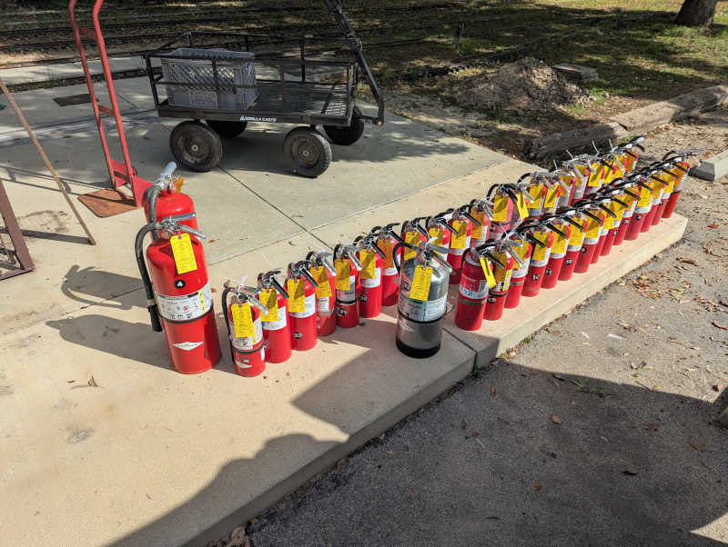
After the recertification process completed at around 11AM came the fun part: put all the extinguishers back in their cubbies all around LALS!
TODO: Get contact information for our “regular” guy Tony, and ask about replacing some clear plastic panels with the glass they’re supposed to be.
Monday 2026/3/2#
- 4 hours today, 64 hours this quarter.
Meet with John for signals critical issues then independent projects before attending board meeting.
1:30PM - 5:30PM (4 hours)#
Met with Smith and Strawn to resolve the two most critical signals issues.
Panel C spooky behavior was traced to a bad pole switch combined with discrete digital logic undefined behavior plus intermittent train detection. I’m not thrilled at how the undefied logic behavior was dismissed by Smith as “that’s just how the board works.” I see it as a risky flaw that needs to be fixed but I certainly won’t get that from Smith.
Panel E timer keeping the lights on 24x7 was traced by Smith to a soldering error by Smith.
Got a quick lesson from Smith on how some of the existing boards worked. I want to get to a point where I know which terminals to probe when debugging signal issues with these boards. This will be very useful, and better work- to-usefulness ratio than learning enough to diagnose faults within a board.
After signals crew disbanded I went to wipe down new rust from the table saw because it’s been sitting out exposed. I got most of it off but a few shadows remained.
Then I went to install the new super sucker hose with my 3D-printed adapters. It seems to work, and a quick test suck looked promising. Once these have proven themselves in a real work session I will print with more expensive and durable material. If not, then I’ll need to iterate.
The new hose offers greatly increased reach over the old.
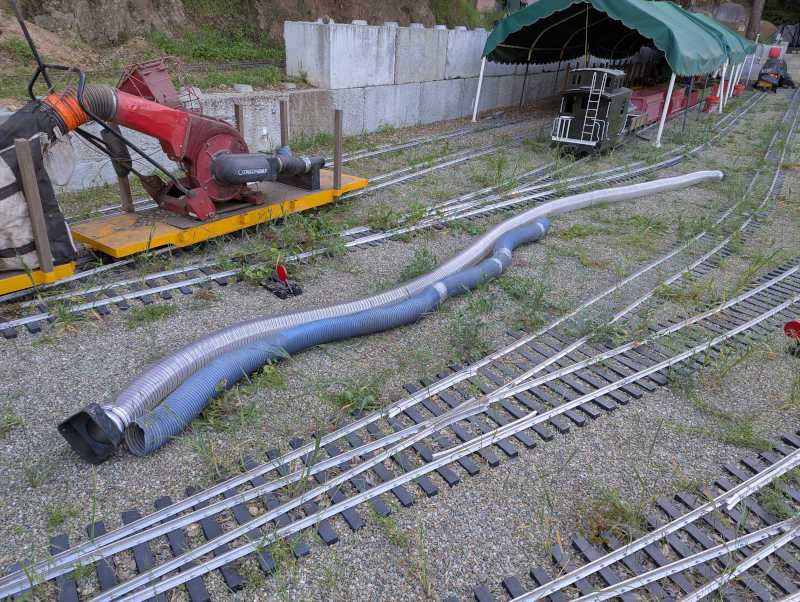
Sunday 2026/3/1#
- 6 hours today, 60 hours this quarter.
Sunday public run operations
8:30AM - 2:30PM (6 hours)#
Started the day by helping Cammarata adjust Sherwood station clock to the correct time. A public-facing embarassment finally rectified!
West loop track walk including leaf blower clearing. It finally feels like the trees are running low on leaves to drop.
Floating helper for Sunday public run operations. No conducting today due to inability to project voice. (Recovering from sickness.)
Kitchen beverage refrigerator restocking.
2:30PM - 4:30PM (No club credit)#
After public run concluded, gave Alexander a tour of LALS signals and discuss potential project ideas. And sightsee features like “structural wiring”
After Alexander left, went to the super sucker to check fit of my 3D-printed hose adapter sleeve. It can be a little bigger.
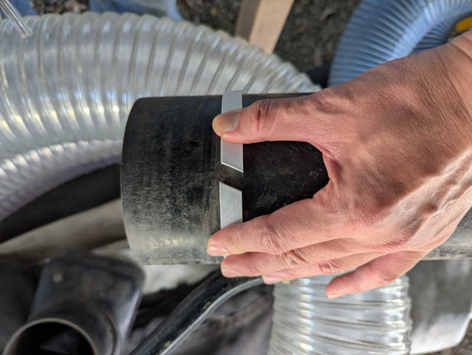
Saturday 2026/2/28#
- 7.75 hours today, 54 hours this quarter.
Mid-week signals work
9:00AM - 12:45PM (3.75 hours)#
Panel C still spooky with derailment risk, and now Strawn somehow managed to trigger it while digging weeds out from around the switch.
Panel G DC power analysis. 1000uF in parallel did not help dwarf blink.
Panel G signal bridge fault traced to broken feed wire on block 4, fixed.
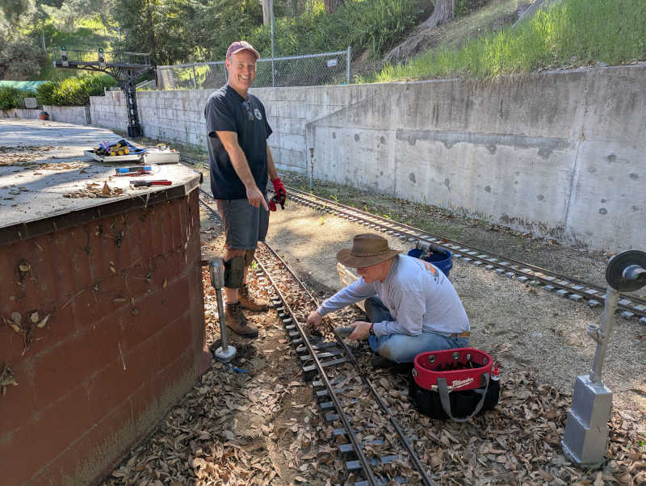
Clouse has a Chevy Blazer EV, ask to check with a tape measure and it has at most 6ft of length behind the front seats for a train. Usable length probably less due to shape of hatch, etc.
1:45PM - 5:45PM (4 hours)#
Panel J switch motor board upgrade went poorly. SM-1 refuses to switch polarity and SM-2 triggers panel brownout.
KD red light was caused by detector failure on track inbound from Akins, then also from a bond wire, then the green is really dim.
New super sucker hose is a little bigger than the old, and being more rigid the worm screw clamp couldn’t squeeze it down enough.
Friday 2026/2/27#
- 2 hours today, 46.25 hours this quarter.
Emergency signals work - motor deactivation
9:00AM - 11:00AM (2 hours)#
Signals team received reports of switch throwing under train. The high risk of derailment meant somebody had to go out there pronto for some data gathering followed by switch motor deactivation. I now have access to LALS Signals team communications (Slack and Trello) so details will be documented there.
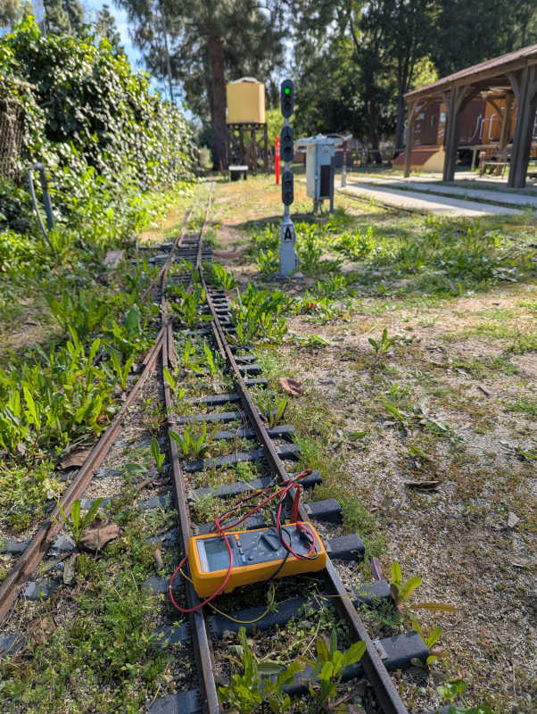
Thursday 2026/2/26#
- 6 hours today, 44.25 hours this quarter.
Mid-week signals work + independent to-do
8:00AM - 12:00PM (4 hours)#
Panel E network timer board seems to count down to zero but not cut power to the system. This board was recently swapped out with another board that only counts up and would also not cut power to the system. Maybe the timer is not the problem? There are multiple wires connected to the output signal wires when theoretically there should only be one. Why? Smith: “Well, I’ll have to look at it.” Until that happens, LALS signals stay on 24x7.
Panel B+C (triple-head going into station) continues to mystify. It would seem to work, then it would not. There’s at least one intermittent connection in the system but it’s such a wide net across several Smith logic boards that we’re getting a very poor time-to-productivity ratio.
For a change of pace from banging forehead against wall, moved over to dwarf signal by Bresee barn. The signals team had been looking for a field test deployment opportunity for a new dwarf signal board. So when the old incadescent bulb burned out, that was our sign.
On the plus side, all the mechanical and electrical steps we knew were needed went off almost exactly as planned.
On the down side, the updated blink circuit does not blink.
This was bench tested ahead of time so we verified it still works with a bench power supply in the tool car. Current hypothesis: the rectified DC power in panel G is not as smooth as a bench power supply and this dirtier power is somehow confusing the blink timing circuit.
In the meantime the dwarf signal will accurately reflect state of the switch with an always-on white light for main and always-on red for divergent. A future iteration of the dwarf signal board and/or upgrading panel G DC power should make the red blink.
1:00PM - 1:30PM (0.5 hours)#
Reconnaissance run for super sucker gathered the following information
- It is built around a Troy-Bilt Model 47286 This product (and indeed the entire product line) has been discontinued so there’s no mention on Troy-Bilt’s own site. From other sites I gathered it is an 8HP Chipper/Vac.
- I measured the hose adapter nozzle tube diameter at 4 13/16", but there’s a slight taper to the tube like a slight funnel. It probably opens up to 5" diameter.
- The inside diameter of the existing hose is 5" +/- 1/16" or so depending on where I measure this old tired out-of-round hose.
- The existing portable sucker hose has a relaxed (neither stretched nor compressed) length of 12 feet and the track sucker has a length of 17 inches.
Conclusion:
- It will fit any flexible hose with nominal inside diameter of 5" but it will need to be a flexible hose strong enough to withstand force of suction and tough enough to withstand debris that will be flowing through. A dryer hose from Home Depot will not cut it.
Nominee:
- McMaster-Carr 5136K24: Clear Abrasion-Resistant Duct Hose for Metal Chips and Shavings, 5" ID Stocked in 25’ lengths so buying the whole thing is $14.08/ft and any shorter is $18.11/ft reflecting a processing fee for cutting. It also means if the ambition is any longer than 19 feet we might as well get the whole 25. So I will!
1:30PM - 3:00PM (1.5 hours)#
I bought a bottle of 3-in-1 Lock Dry Lube and went around working it into several sticky general member locks. See how well this stuff works on high traffic exposed locks.
- Power tool shed. (Pictured)
- Hand tool shed.
- Tool car door.
- Club owned engines for sunday runs. (One for 1989+1, one for SPPA+1)
Other GM locks I know about but not yet done:
- Member entrance gate.
- West gate for Sunday guest emergency exit.
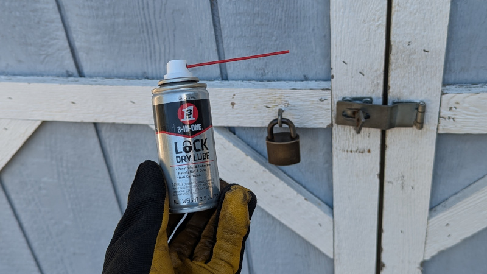
Saturday 2026/2/21#
- 4.5 hours today, 38.25 hours this quarter.
Mid-week signals work
11:00AM - 12:30PM (1.5 hours)#
Arrived to find the crew at panel R hooking up wires to communicate status with panel S. Without these wires, signals on the boundary today show green (this block is clear) or red (this block is occupied) but never yellow (adjacent block is red) because they don’t know status of adjacent block under juristication of the other panel.
1:00PM - 4:00PM (3 hours)#
After lunch, proceeded to finish the job in panel S. Part of it involved replacing the prototype ESP32 board in panel S with a more full-featured Freenove ESP32 breakout board that I’ve been told is what the (western) panels will standardized on.
After panel work was complete, we split up to verify new yellow signal shows properly on all relevant lights. I adopted signal SB because it was not showing yellow. I rewired the corroded connector and tried a replacement backplane to no avail but I did learn some lessons.
Lesson #1: add to testing repertoire.
- Switch to test mode.
- Disconnect connector
- Measure voltage of each light output in the panel. They should be at supply voltage reflecting open circuit.
- Measure voltage of each light input at the signal. They should match #3. If they do not, the wire is bad. Power is going into the dirt.
Lesson #2: The physical geometry inside a signal head, combined with LED backplane and connectors, is not great for ferrules. I made it work by rotating the ferrules so they point away from the threaded mounting post but this is not ideal mechanically.
The bad wire hadn’t mattered before because the signal would never show yellow anyway. But now it could though the only way SB will show yellow is if we run a replacement wire. In preparation for this, helped Harper dig accumulated dirt out of the associated vault for wire recon. New wire will be a future project.
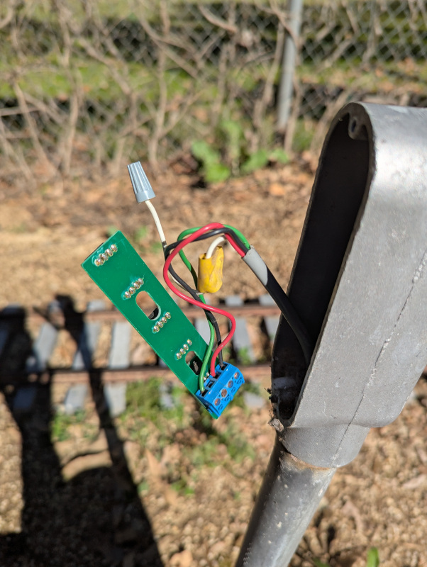
Friday 2026/2/20#
- 6 hours today, 33.75 hours this quarter.
Mid-week signals work
10:00AM - 12:00PM (2 hours)#
Came in at the tail end of Strawn & Harper debugging why triple head going into station was not reliably displaying red/red/yellow for track 2. I couldn’t help very much before the onsite team ran into a familiar brick wall. It’s great that Smith answers phone calls for questions, but it’s not very productive when we keep ending with his “Well, I’ll have to look at it.”
Moved on to panel W, which is completely dark. Quickly found that there was no AC power coming in. All breakers in panels look OK. It took another call to Smith to learn it was connected to a GFCI block between the kitchen drinking fountain and UP caboose. Pressing the “RESET” button on the right restored panel W power. If this was tripped by recent rain, it implies water and damaged wiring in the underground conduit.
1:00PM - 5:00PM (4 hours)#
The afternoon was spent installing a switch motor in Smith valley. Apparently this is a new type of motor with dimensions slightly different from the old one, so we have a lot of reworking to do. The most annoying aspect was the motor shaft has a roll pin in it to fit in the coupler and this roll pin sticks out almost as far as the cam lobe to trigger limit switches. It was tricky to adjust the distance so it is not too close and not too far. Harper and I got things delicately balanced to function correctly at the end of the day, but how long will that last? If this proves to be unreliable as I expect, I will push for cutting the roll pin shorter next time.
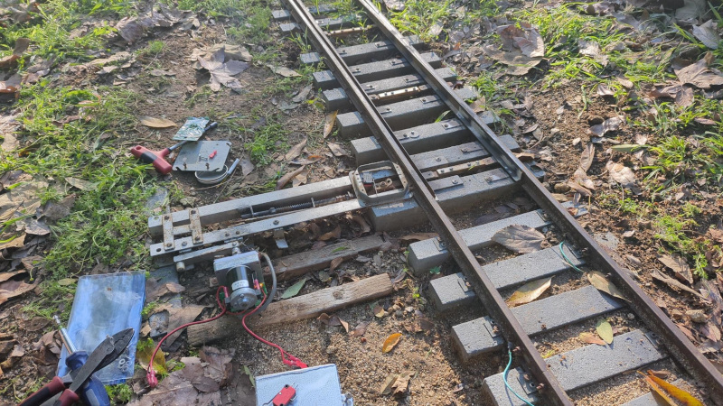
Sunday 2026/2/15#
- 5.5 hours today, 27.75 hours this quarter.
Public rides on Carolwood day. It was not a smooth running day. I had to call for more train stops just today than I ever had to do since the day I started conducting for LALS public rides.
10:00AM - 12:30PM (2.5 hours)#
After enjoying a French toast breakfast by the kitchen, I helped Cammarata adjust Sutchville clock which I hadn’t noticed earlier. Also tried to adjust the station clock, but nobody on site has a key to get into the library. We’ll have to do that later.
When we “Spring Forward” in a few weeks, the list of clocks in rough order of difficulty are:
- Kitchen
- Sutchville station (x 2)
- Pumphouse (8 foot ladder + two person job + member key)
- Sherwood station (6 foot ladder + two person job + library key)
At this month’s board meeting it was suggested that we skip the water wheel today, in order to ensure Crystal Springs stays dry for slurry seal. Since the slurry plan has been postponed due to expected rain, I turned the water wheel on.
Just before safety meeting I grabbed a leaf blower and did a quick “better than nothing” round to clear Sherwood station of pine needles and leaves.
This morning was also classroom instruction for the next batch of train conductors. I started the day conducting for Santa Fe Electric operated by Blake, with Eigan and Clouse as ride-alongs. Quite the “teaching moments” today, with one derailing caboose and multiple unruly passengers. Ames took over conducting just in time for me to go eat and calm down.
Elsewhere on the grounds, a private train derailed with much onboard drama, a train suffered a brake system failure causing uncommanded brake activation, and reports of signal & switch issues that will need to be checked out later.
1:00PM - 4:00PM (3 hours)#
After lunch, on standby floating conductor duty. Cammarata also needed a floating engineer. When I said I hadn’t been certified to be engineer for public trains, was told to work on that. Will do!
In midst of filling miscellaneous public ride operations needs, also joined Ames for a round of kitchen dishwashing. It went a lot faster with two on the job.
Ames returned to conducting, then I took over when Ames had to leave promptly at 3PM. Carolwood day crowds meant we ran well past 3:30PM before we drained the queue. Not helped the fact I had to call for another stop due to misbehaving passengers. What is up with today!?
To support “work on that” mentioned earlier, I was given my first opportunity to operate engine 1989 as we put away bench cars and put the engine back into its berth. Looking forward to getting checked out on all club engines.
I turned off the water wheel.
Newly applied Southern Pacific caboose graphics looks great. I also learned how to work the rail gate plank thing for when I can’t duck under 1-gauge elevated layout for whatever reason.
Saturday 2026/2/14#
- 7.5 hours today, 22.25 hours this quarter.
Monthly LALS work day. I stayed with Strawn and Harper to resume where we left off yesterday.
9:15AM - 12:15PM (3 hours)#
Day started with panel H. Strawn’s train was parked alongside. It looks good in front of rail town Minden. Crabbe, Rodstein, Tagochi, and probably others dug Minden out from eroded cliff that had threatened to bury it.
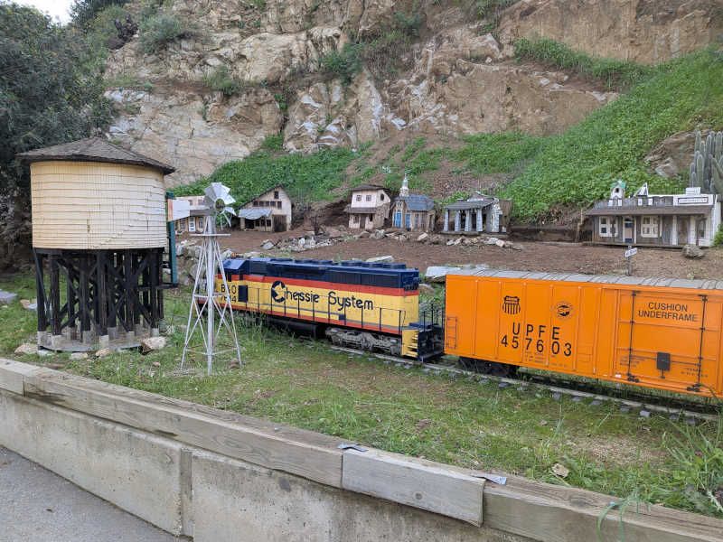
One board and one conduit wire run replacement later, we have resolved the false red+yellow coming down from mountain division. It’s been a long time since we saw green on that light!
Panel H still has a long to-do list but this is good enough to support Sunday public run operations. We switched focus to panel L so it can do the same. First task was to find the open circuit for rail block 1. Tracing feed wires through vaults, we found one not connected to anything. “Well there’s your problem!”
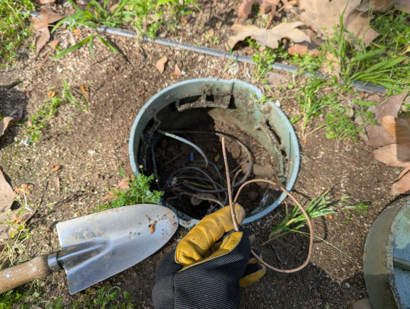
It looks like a wire nut failure. After fishing out the corresponding wire, a new lever connected them and panel L block 1 was back in business.
Panel H block 4 was identified as a concern yesterday, but it’s not on mainline and it is heavily contaminated with leaves so it is lower priority for later.
Clouse was working in that area whacking weeds and noticed a broken wire. This wire bridged the outer rails of the switch at panel L block 12 and would explain the inconsistent detection on that block. That broken wire prevented the detector from seeing a train on the far side of the switch while the near side has correct connection and thus detector block does not indicate a fault. Installing a replacement wire restored block 12 detection.
1:15PM - 3:00PM (1.75 hours)#
Signal light LI green LED turned out to have two intermittent connections. The wire was loose in the connector terminal. After that was reseated, found another loose connection between the connector and the LED backplane board.
Hypothesis: The increased resistance associated with the loose wire heated up and distorted the connector plastic housing. Changing how spring contacts gripped the solid metal post soldered to the LED backplane board.
Proper fix: Replace all components suspected of heat damage, which means both the connector and the LED backplane.
Today’s hack: bend the LED backplane metal post a tiny bit so it makes better contact with connector spring terminals. If this doesn’t work, then let’s proceed with the proper fix.
Between yesterday and today, we’ve restored all known signal issues important to standard Sunday public ride operations. However note light IE shows either yellow or red, never green. This is masked by the fact Sunday route goes up to the waterwheel. So IDA/IDB will show red/yellow. When this is true IE is supposed to show yellow anyway.
3:00PM - 5:45PM (2.75 hours)#
As Harper and Strawn departed, I saw Hitchcock setting up the fabled super sucker machine. I went over to learn how to use it. Brief training session was followed by getting some field experience with it.
It’s very cool but it isn’t quite a miracle worker. The flexible suction hose is getting old and brittle and today’s use ripped a pretty big hole. We had to take a break to find some duct tape for patch work.
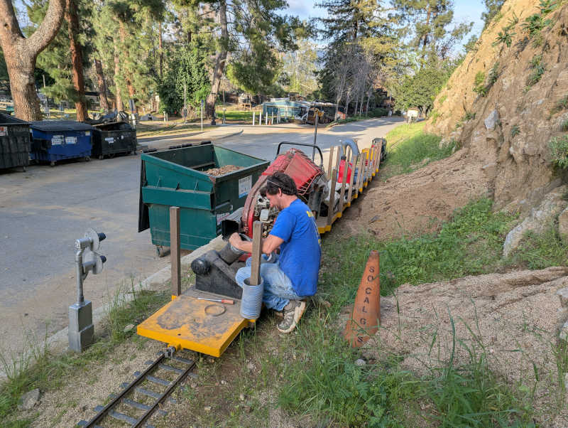
Even after it was patched I learned it is quite easy to overload the pipe causing a blockage. Between patching holes and clearing blockages, we lost daylight before we could vacuum up all the piles of leaves we had raked up.
5:45 PM - late (no club credit)#
The super sucker is stored on a pit rail dedicated to equipment, which is the center of three tent-covered rails. Also on that rail is the caboose that came as a set with engine No. 8. While the engine is kept in a barn, the caboose has been sitting outside. Hitchcock rolled it into the maintenance bay for some cleaning TLC. I watched and learned and chatted.
This week’s rain dropped some water on the old table saw, causing a few new rust spots. Being fresh and very minor they were quickly cleared up with a wipe of rust preventative LPS 2 highly recommended by Hitchcock. I should be able to find a can for myself near WD-40 on hardware store shelves.
Friday 2026/2/13#
- 4.25 hours today, 14.75 hours this quarter.
Mid-week signals work day focused on panel L
11:00AM - 11:45AM (0.75 hours)#
Preparation for running wires through underground vaults for detector block 11 which will replace current above ground wires vulnerable to damage.
11:45AM - 1:15PM (No club credit)#
The panel J motor 1 project required some support from Nelson’s home machine shop so made a trip combined with lunch.
1:15PM - 4:45PM (3.5 hours)#
Ran four wires through several underground conduits and vaults. Two wires for detector 11. One to adjacent potential timer block (future project), and the last wire as backup in case timer block could not share feed/return wire with detector 11.
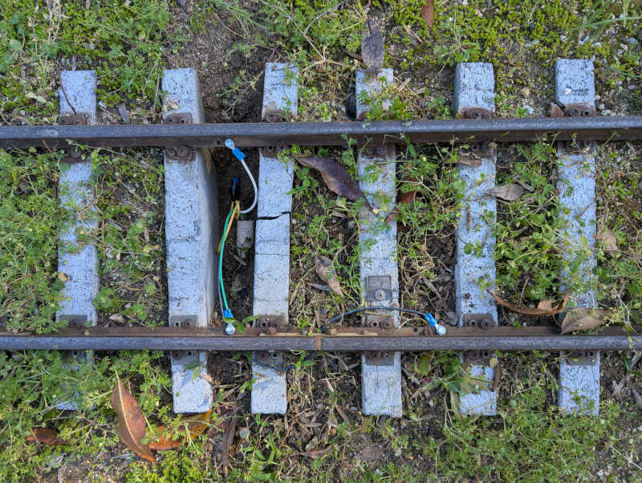
Afterwards, checked everything associated with panel L. Found several problems.
- Block 1 failed to detect. Board sees full voltage indicating open circuit.
- Block 4 failed to detect. Board sees proper voltage.
- Block 12 (associated with switch motor 3) inconsistent detection.
- Signal light LI green LED has intermittent connection somewhere.
To be continued…
Sunday 2026/2/8#
- 4.5 hours today, 10.5 hours cumulative
8:30AM - 1:00PM (4.5 hours)#
Arrived at LALS to see the fabled “Gold Rusher” locomotive out for some maintenance work. It gleamed beautifully in the morning light. I hope to see it choo-choo down the rails at some point in all its shiny glory.
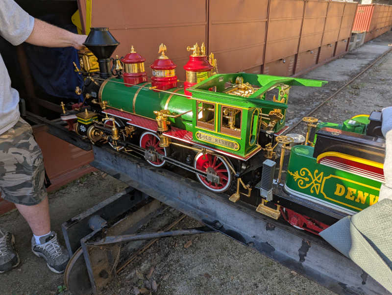
I grabbed a leaf blower and walked the west loop. Noticed several pieces of rusty debris in close proximity to each other but with no obvious source. All rail within ~4’ in either direction looks fine to my eyes. Later Kristman identified them as heavily corroded rail tie plates and associated fasteners. I think I would have noticed missing tie plates so where did these come from? Still a mystery.
While I had the leaf blower in hand, blew pine needles and such off the concrete areas of Sherwood station: both the customer waiting line area and train platforms.
The signal (KAB?) by the curved westbound rail leading to O’Brien-Moore bridge was correctly green as expected when I walked past. But later coming back the other way, I happened to look over my shoulder and saw it was red with no train. This may be related to that oddly dual-purposed rail segment B-K2. For the moment I can only report it as a known false red to Strawn and at the safety meeting to Sunday operations train engineers.
Helped Alexander restock the cold water refrigerator in the ticket booth. Then figured I might as well stay on the theme and went over the Kountry Kitchen beverage cooler as well. Several flats of drinks are now all in the refrigerator, opening up storage shelf space.
While moving bottles towards the front, I found there’s something brown and sticky (Coca Cola? Pepsi? Dr. Pepper?) on the bottom. I wiped up the stainless steel, and also bottoms of several cans that were sitting in that stuff.
Sent pictures of updated status (storage shelf, cooler left, cooler right) to Dorado for his information.
Meeting up with friends for lunch today so departed at 1PM.
Friday 2026/2/6#
- 3.0 hours today, 6.0 hours cumulative
11:00AM - 1:30PM (2.5 hours)#
Met up with Strawn and Harper by panel K to see why signal light KD is dark. An ultimately unsatisfying session because after probing some panels and wires the light came back on without any intentional change on our part. Intermittent connections make us tear our hair out.
While probing panel K, learned that a segment of rail (B-K2) has an associated train presence detector board for signal purposes AND hooked up to another detector that triggers a timer to control signal panel power. The timer functionality is usually done by a short dedicated length of rail. What are the tradeoffs between using dedicated rail versus dual-purposing like this?
Panel K is also unusual in having an always-on exhaust fan pushing warm air out of the enclosure. This may be related to the timer board (since it needs to stay on 24x7 to control whether the rest of the panel comes on) or it may be due to the fact this panel gets a lot of sun exposure. New idea for the project to-do list: add a rail side scenery facade building that also act as panel K sun shade.
With some lessons learned about panel K and KD illuminated, attention moved on to a rail switch motor control module in panel J. The new module is not an identical drop-in replacement for the old so wiring verification and remapping had to be done first. This was more difficult than it should be, partly due to technical problems like a jumper wire that didn’t actually jump, and to non- technical issues like low blood sugar. Fix for the former: different jumper wire. Fix for the latter: get lunch.
2:30PM - 3:00PM (0.5 hours)#
Continue panel J rail switch motor board replacement. Good news: the new board sees user pressing on the rail side pole switch. Bad news: the new board isn’t commanding the MOSFET to send power to the motor. Without power the motor doesn’t turn and the switch doesn’t get thrown.
I had to be out the gate by 3, Harper and Strawn continued working.
Monday 2026/2/2#
- 3.0 hours today, 3.0 hours cumulative
First yellow time card as full member!
1:00PM - 4:00PM (3 hours)#
Helped Strawn with signal work.
Opened up the Sherwood station crossing signal boxes because they aren’t doing anything as if they don’t have power. Tracing through the power supply board, everything looks to be in order. That’s when we noticed the signals are now powered up. Hypothesis: there’s an intermittent connection somewhere in the power supply board, and it woke up when we were poking around with a meter. Not fixed, but at least we’ve narrowed it down and it’s working for now. I guess we can try wiggling the power board the next time it happens.
Moving on to panel G to diagnose missing red light on the signal bridge. Flipping the light driver board to test mode, we saw it was not even trying to illuminate red. Swapping out the board allowed red light to illuminate. I performed this board swap as my first hands-on signal work and I was supervised by no less than five other people. I feel important.
Next: why is it trying to show red light when there’s no train? Found a busted bond wire to replace and now signal bridge lights show red when there’s a train and green when there is not. Success!
Next up panel H. While waiting for Smith to arrive, probed to find current mapping from rail segments to detector boards. Then consulted with Smith to understand why there’s a signal showing red and yellow simultaneously, something that should never happen. Traced electrical behavior through rail and found another bond wire to replace, but light is still showing both red and yellow simultaneously. Smith will look at it some more.
While working on H, Strawn noticed light going up to Mountain Division is indicating a train when there isn’t one. This is new behavior within the past few hours. Harper was working in that area in preparation for future work and may have inadvertently damaged a feed wire. Fortunately it was quickly diagnosed and repaired.
7:00PM Board Meeting#
Among various club business, three probationary members were voted to full membership: Syring, Turner, and me!
Sunday 2026/2/1#
- 1.5 hours total
- 0 facility (61.25 out of 18)
- 1.5 conductor (25.25 out of 18)
- 0 kitchen (7.75 out of 6)
Last orange card as probationary member.
8:45AM - 10:00AM (No club credit)#
Two training laps on Santa Fe Electric with Ronne in the first car going over things as we went. I had to articulate what track signals I see, explain what I think they meant, and what I should do about it (if anything.) Also included a few randomly called whistle stops for me to practice stopping promptly without being jarring. Learning the throttle engagement curve on SFE control knob feel a lot like learning a car manual transmission’s clutch engagement zone. Practice makes perfect!
Ronne thinks I’m doing very well and on track towards my goal of getting certified as an engineer on club engines for public runs. A good vote of confidence as I work towards fulfilling other requirements.
10:45AM - 11:00AM (0.25 conductor)#
Safety meeting
12:00PM - 1:15PM (1.25 conductor)#
Lunch relief conductor on Santa Fe Electric
Misc#
Plus other minor facility tasks like helping to take out the garbage of Kountry Kitchen. Nothing big enough to track.
Reviewing my photo record of my time card, I realized I forgot to put down my name and today’s date on the card. Oops! Thankfully I have more than enough hours to finish out my probationary period and missing these 1.5 hours won’t matter.
Tuesday 2026/1/27#
- 7 hours total
- 7 facility (61.25 out of 18)
- 0 conductor (23.75 out of 18)
- 0 kitchen (7.75 out of 6)
9:45AM - 1:00PM (3.25 facility)#
Joined for a full day of signal work! Started by helping Strawn make panel I talk to panel R so that a red signal in zone I will trigger the appropriate yellow signal in zone R. Learned valuable lesson that these panel connections have isolated ground wires. In hindsight it was something both of us should have known.
After that success, moved on to panel S. I put my familiarity with leaf blowers to work clearing out leaves to help see where wires already existed. Once wires were located and identified, it didn’t take long for Strawn and Harper to restore power timer functionality. The timer module needs a bit of programming to make it display a countdown and adjust the time span, this is now on Strawn’s to-do list.
On the way out to lunch, we noticed false red/red displaying for main line / mountain division. Strawn and Harper agreed that should take priority over what they had on their to-do list for the afternoon.
2:00PM - 4:45PM (2.75 facility)#
After lunch Strawn opened up panel H to see why mountain division has a false red/red. Found several error conditions that led to replacing two broken bond wires and one broken track resistor. Unfortunately the light is still not behaving quite right. Now the signal is green for main line, which is correct, but mountain division light has both red and yellow illuminated even though track voltage levels are consistent with a green. With wiring fixed and voltage correct, the problem is likely somewhere within Smith proprietary analog logic circuits.
We also found the both adjacent western blocks are completely unpowered with zero train presence sensing voltage. Thus trains on those blocks are not being tracked by the signal system. This has repercussions beyond today’s scope of work, will have to come back later.
After today’s session I feel I can do some basic signal issue diagnosis using a voltmeter, looking for 12-16VDC vs. 6-8VDC vs <1V DC. Probably can’t fix anything without access to signal panels, but can gather information to help make repairs faster.
For next session: bring ferrule crimp kit and bring iPad online with Test Flight for the signal system reference app.
4:45PM - 6:00PM (1.25 facility)#
After Harper and Strawn departed, I went back to my solo project: club’s old table saw. I cleaned off the top surface on Jan 10th but the grinder-mounted Merryland strip disc could not get into the pair of recessed guide rails so they remained rusty.
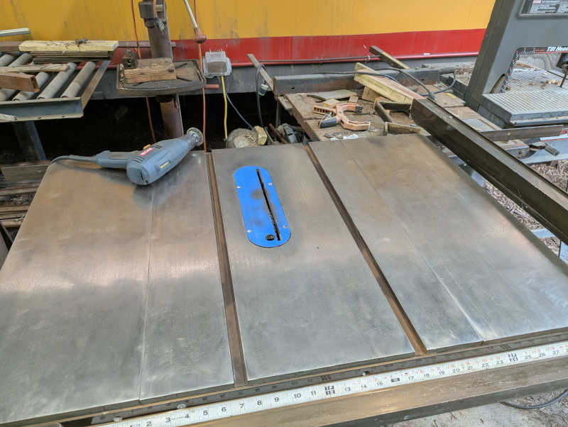
Today I brought some drill-mounted steel wire wheels that I can use to clean out those slots. Taking care not to (further) mar the top surface with those steel bristles.
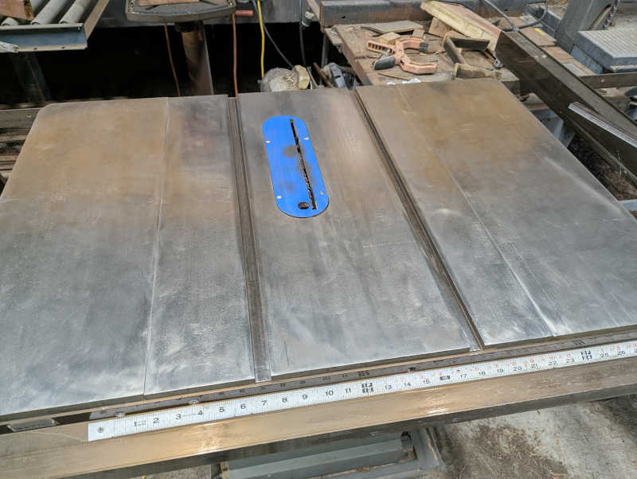
Once those were clean, I put the guide back into the slot and noticed it was also covered with rust. Good thing I saw it while I have all my tools handy, so I could make it all nice and shiny too.
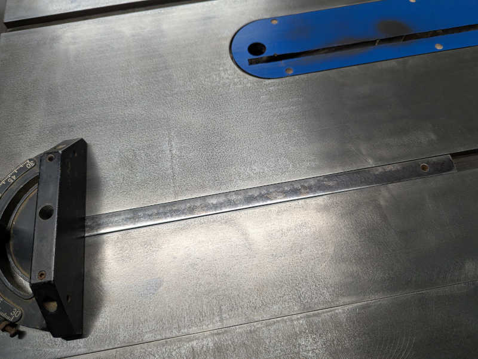
After applying a coat of oil to keep rust from immediately returning, I am content to call the table saw project done for now. Pending evaluation and feedback for improvement.
Sunday 2026/1/25#
- 5.5 hours total
- 2.25 facility (54.25 out of 18)
- 3.25 conductor (23.75 out of 18)
- 0 kitchen (7.75 out of 6)
8:30AM - 10:45AM (2.25 facility)#
Lots of leaves dropped on the water wheel feature. Blew and raked three garbage cans worth of leaves for the organics bin while McCabe worked on the debris screen. I wasn’t confident I could put it back together so I hadn’t taken it apart in my previous work sessions. Today was the first time I could watch McCabe take it apart, shovel accumulated dirt, and put it back together. Now I can handle doing the same the next time I shovel out the reservoir.
Learned the fine mesh filter looped over the drain pipe exit were nylon sheer knee-high socks. The old one was retired and a new one installed, with a few extras available for the future.
After the water wheel was sorted out, took the leaf blower and walked the west loop. Leaf clearing was easier because Tagochi had already done some of it with a gas-powered blower. Usual rocks and branches, nothing major.
As I completed my west loop walk, Rodstein reported a problem with the east loop: rails over a bridge were loose, moving as much as 1/4" laterally which is bad. I join the crew making an expedient field repair to steady the rails for Sunday ride operation. A real fix will be needed later.
10:45AM - 11:00AM (0.25 conductor)#
After safety meeting I was slated to conduct SPPA, but Tagochi needs more conductor hours so I gave up that seat.
11:45AM - 12:45AM (1.0 conductor)#
Santa Fe Electric conductor duty. McCabe handed off to me, and I handed off to (?) at lunchtime.
Lunchtime entertainment#
During lunch break, saw Jay Leno stop by with his White (that’s the brand name) steam car. Judging by its green color, I guess it is the 1909 Model M featured in this video.
Love that the thing was designed without an electrical system. Not just lack of electronics: lack of electricity! No spark plugs, no ignition. All lights are acetylene gas burning lamps, including the dashboard instrument light.
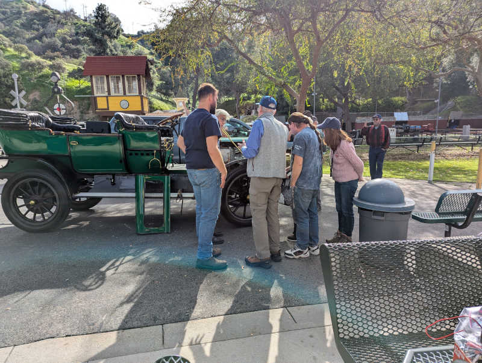
As he departed he gave us a toot of the horn – a multi-tone steam whistle, naturally.
1:30PM - 3:45PM (2.25 conductor)#
Resumed conducting Santa Fe Electric engineered by Blake. Continued for the rest of the day including last train of the day duty of locking west gate.
Miscellaneous#
Saw that someone performed the experiment discussed at general member meeting. I cautioned against using vinegar on corrosion concerns. Well, they were right it would kill weeds, and I was right it greatly accelerated rail corrosion. (And probably fasteners, switches, etc.) I stand by my opinion rail condition is an important concern at a train club.
The pump house clock has been one hour off for several months, since the time we were supposed to “fall back”. Alexander helped me adjust the clock so it reads correctly again. That was an adventure but we should be able to do it faster in a few weeks when we “spring forward”. Afterwards we were told Harrison could do it quickly so I should ask him about it the next time I see him.
Got a chance to look inside the club library, saw the collection included a few out-of-print titles that I would be interested in digging into later. Including Kozo Hiraoka’s Climax and Pennsylvania A3 Switcher books.
Dinner at Tallyrand. They do a solid chicken fried steak.
Tuesday 2026/1/20#
- 2.5 hours total
- 2.5 facility (52 out of 18)
- 0 conductor (20.5 out of 18)
- 0 kitchen (7.75 out of 6)
2:00PM - 4:30PM (2.5 facility)#
Accepted Strawn’s invitation to join in signal work today though I only got to participate towards the end as I had an existing eye doctor’s appointment. Still, I got to help a bit and learned a lot doing it.
The biggest lesson of the day: all my past career skills trying to make sense of poorly documented legacy code built up over decades will transfer directly to making sense of poorly documented track signal wiring built up over decades.
Past work have not necessarily been done with maintainability in mind, as demonstrated by fasteners only accessible from below. Which today means we would need to pull up the track segment to get to it. They likely built the assembly while laying the track and plopped them into the ground together. Not accounting for the possibility someone may need to service the switch independently at a later date, like today.
History can also be found in wires that today goes nowhere and connect to nothing, trying to tell me stories of projects past.
I had expected to see major differences between the components I’ve used for my indoor electronics projects and track signal equipment out in the elements. Like extensive waterproofing to mitigate corrosion and studious grounding to maintain signal integrity. I didn’t see much of that at first glance. I hope I’m just overlooking mechanisms I don’t yet recognize, but if not maybe it is a contributing factor of signal reliability issues.
One thing I am confident of: there will be no shortage of work that needs doing here.
Sunday 2026/1/18#
- 5 hours total
- 2.25 facility (49.5 out of 18)
- 2.75 conductor (20.5 out of 18)
- 0 kitchen (7.75 out of 6)
8:30AM - 10:45AM (2.25 facility)#
Introduction to track signal system from Strawn. Included some history on both technical and non-technical issues surrounding the signal system.
Cleaned up some of leaves built up overnight on water wheel, then turned on water pump. Watched until I was satisfied the water flow closed the cycle correctly.
Pre-run inspection walk for west track. Rodstein verified. Rock fall is active: a big rock fell on the track in the time between my walk and Rodstein’s.
No leaf blower on track today because somebody took the bucket of batteries. In hindsight I should have gotten on the radio and asked who’s got it. That’s what a radio is good for!
10:45AM - 12:30PM (1.75 conductor)#
Safety meeting.
Conductor for Santa Fe Electric engineered by Cook. Handed off to Ames for my lunch break. I took this opportunity to go thank Carolwood staff for being friendly and waving to our guests.
1:45PM - 2:45PM (1 conductor)#
Conductor for Rio Grande UP 1989 engineered by Nelson. A bit of unwelcome excitement in the form of engine derailment at mausoleum when first axle of second bogie went off track. Joked with guests this is an extended tour of rail operations at no extra charge. Needed to disconnect engine from train to put the engine back on the tracks. I learned that a powered slug would have made this particular derailment recovery much more difficult so it was a good thing our engine was not configured as such.
Several pairs of eyes found no plausible explanation for derailment. Engine went through the same location just fine afterwards. Shrug.
Handed off to Bickel to conduct a train with his family on board. He finished off the day at that post.
Saturday 2026/1/17#
- 2 hours total
- 2 facility (47 out of 18)
- 0 conductor (17.75 out of 18)
- 0 kitchen (7.75 out of 6)
12:30PM - 2:30PM (2 facility)#
Stopped in to shovel sediment out from water wheel reservoir so tomorrow’s Sunday public run can use the lower outlet pipe instead of filling up the reservoir and spilling over the wall like last week.
Shoveling was easier than the last time I did it, partially because it hasn’t built back up as much and partially because I am getting more practiced at it.
The dirt is the functional concern, but the buildup of leaves was a secondary appearance concern. I can clear out the dirt but, as the tree is actively dropping leaves every time there’s a breeze, clearing out all the leaves is impossible. I can only make it better than it was.
Thick buildup of leaves on the structure before my work, a thin layer of fresh leaves when I called it quits.
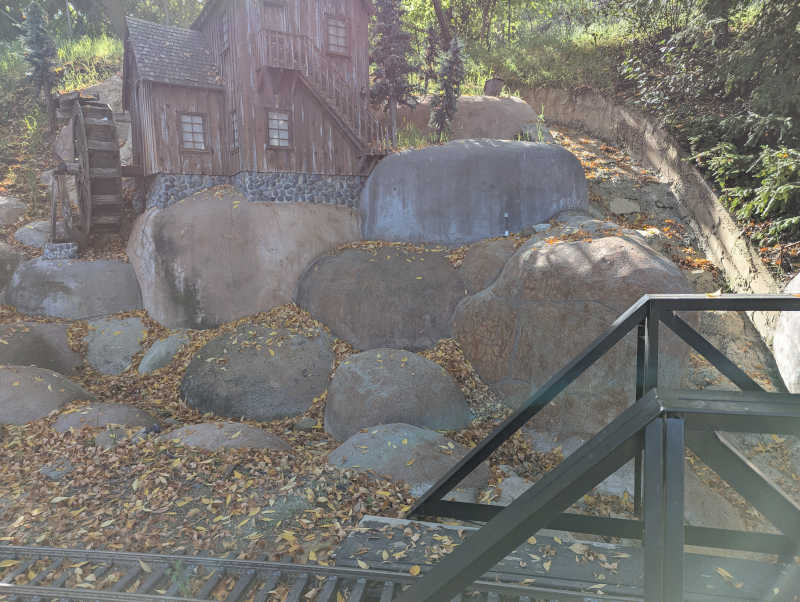
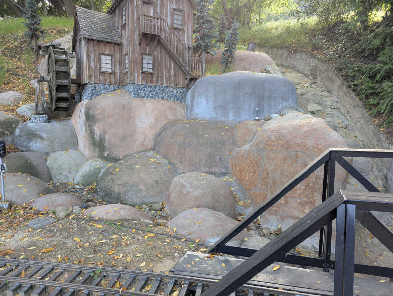
Dirt and leaves at reservoir entry under the rail bridge, before and after.
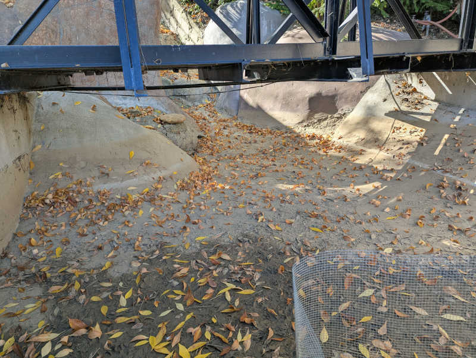
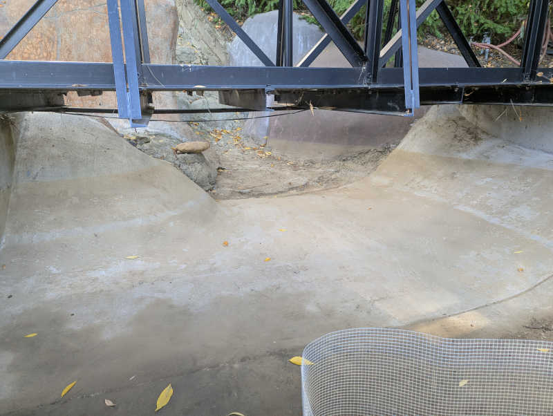
Reservoir dam, before and after.
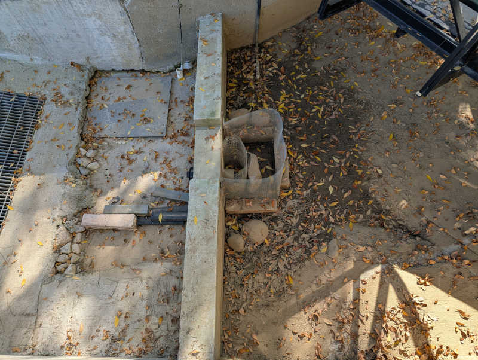
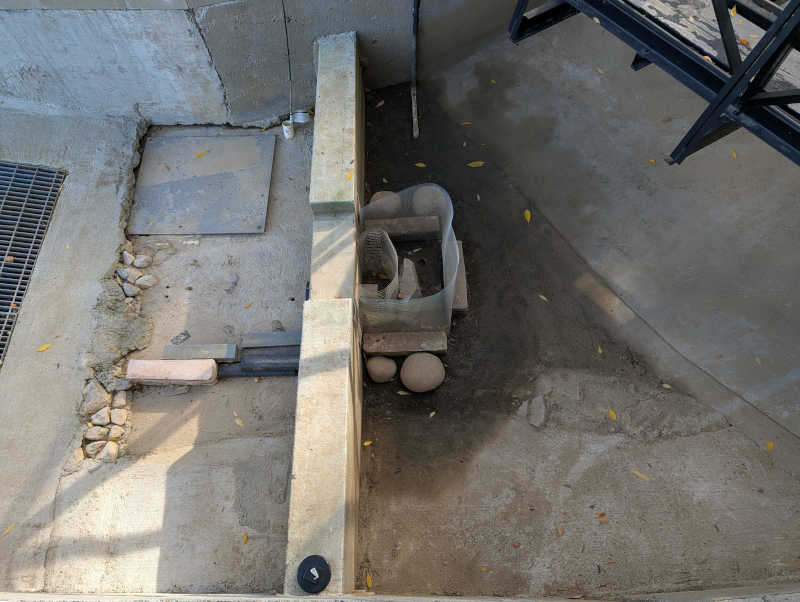
McCabe happened to stop in as I wrapped up my labor, he reviewed and approved of my results.
3:15PM - 4:00PM (0.75 facility not counted)#
Tried to improve appearance of old table saw without success. Not counting this wasted time.
Sunday 2026/1/11#
- 4.25 hours total
- 3 facility (45 out of 18)
- 1.25 conductor (17.75 out of 18)
- 0 kitchen (7.75 out of 6)
8:30AM - 10:45AM (2.25 facility)#
Track morning walk with leaf blower to clear loose leaves from track. Also removed derailment risks like rocks, branches, and pine cones. Since I had the leaf blower, finish my morning routine by clearing off Sherwood station platform and guest entry area.
The water wheel feature is still a bit of a mess after recent rains. I found the grate lifted, implying somebody was in the middle of a project.
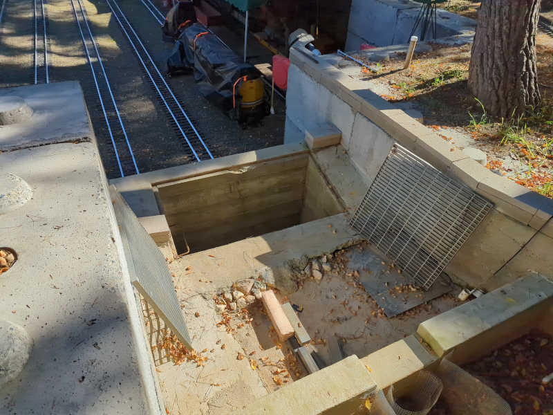
10:45AM - 11:00AM (0.25 conductor)#
Train crew safety meeting. Three trains had their engineers and conductors so I’m relief conductor on an as-needed bases. Frees me up to go back and look at the water wheel.
11:00AM - 11:45AM (0.75 facility)#
After 11AM and no sign of McCabe, reached out via text message. Received assignment: Reinstall grates, clear out whatever leaves are easy to clean, then activate water wheel. Campbell helped execute this plan.
It took a while for water reservoir level to build up to flow over the wall. The pump had to cycle on and off several times before reaching a state of steady flow.
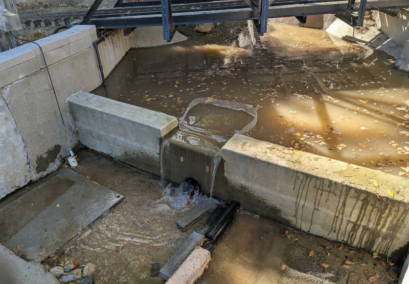
1:45PM - 2:45PM (1.00 conductor)#
Late in the afternoon I conducted Fuad’s train for an hour then helped put the bench cars and the engine away at the end of the day.
3:15PM#
Turned off water wheel electric power and water valve. See what the reservoir looks like next time.
Saturday 2026/1/10#
- 7.5 hours total
- 7.5 facility (42 out of 18)
- 0 conductor (16.5 out of 18)
- 0 kitchen (7.75 out of 6)
Work day! Good turnout means getting lots done alongside with general meeting people and socializing.
Followed up with Paul Boschan about boilers. I should try to get my hands on ASME BPVC section 1. It sets up the basics and also define miniature boiler which applies to scale steam models and locomotives.
9:00AM - 10:00AM (1 facility)#
Work began with a Nelson assigned task: plant some baby Blue Chalksticks (Senecio Mandraliscae) to see how they do. Previous plant experiments got eaten by park animals, hopefully they don’t find these as delicious.
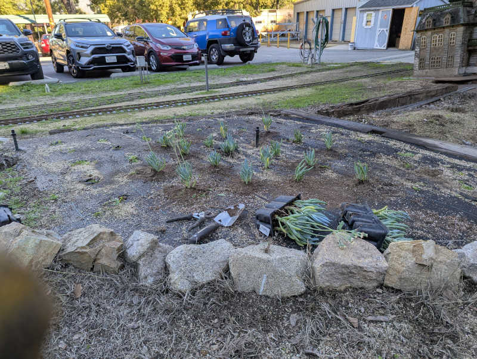
There are a few more holes in the weed cloth than there were plants. I filled the middle leaving borders around. If these survive, we can either plant more to fill out the perimeter or hope the plants will fill out.
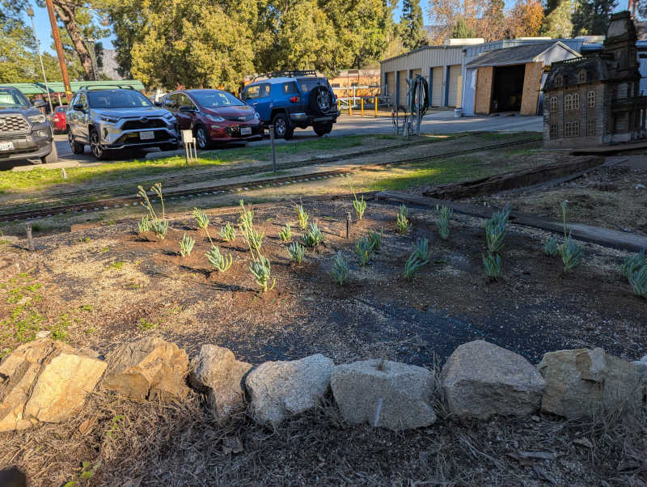
10:00AM - 12:15PM (2.25 facility)#
Next up is a Finch assigned task to rake leaves. I accidentally gathered a crew for this task as Bickel and Chu asked how they can help with work day. Might as well invite them to join me!
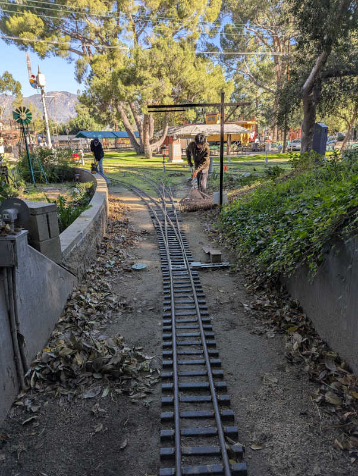
Three people working as a team cleared up leaves built up in front of the two leaf-infested ground level tunnels. We finished up in time for lunch.
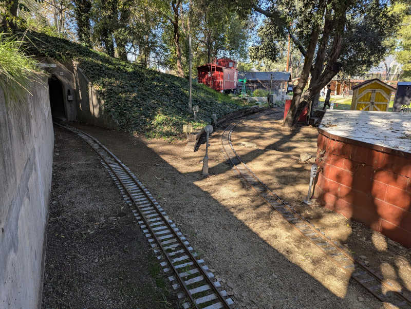
Lunch of tasty Mama Bear sandwiches and chatting with club members I have yet to meet.
1:00PM - 2:45PM (1.75 facility)#
After lunch I was assistant for Perez project of setting up radio repeater. There were a few minor misadventures including a lost & found antenna cap but it’s nominally up and running. To test range I walked over to Bagley wall while Perez walked to member entrance gate. Sounded really good!
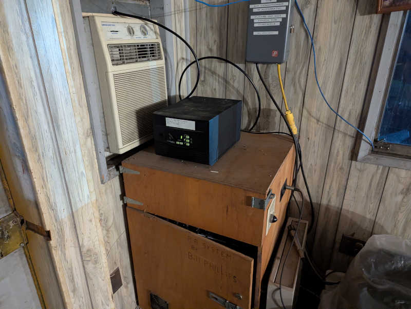
With the new repeater antenna active, the old antenna was coiled up. It will be removed later but it stops being a trip hazard now.
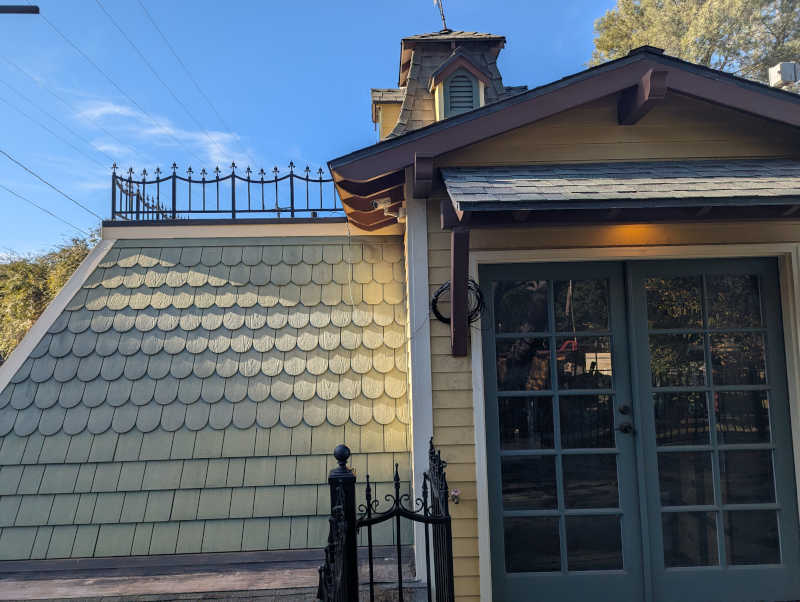
After radio project declared a success, took a break to chat with Perez and Chu and Chu (father and son) about trains and the club. For driving large brushed DC motors Perez recommends the Dimension Engineering Sabertooth 2x32 driver
After they departed for home I moved on to my solo project.
3:30PM - 6:00PM (2.5 facility)#
At the board meeting Suncin asked for volunteers on several projects, I signed up to remove rust from the old table saw. Suncin specified Merryland Strip Disc for the job so I bought a pack and had it along with my angle grinder ready in my car. I brought them to the rusty table saw surface.
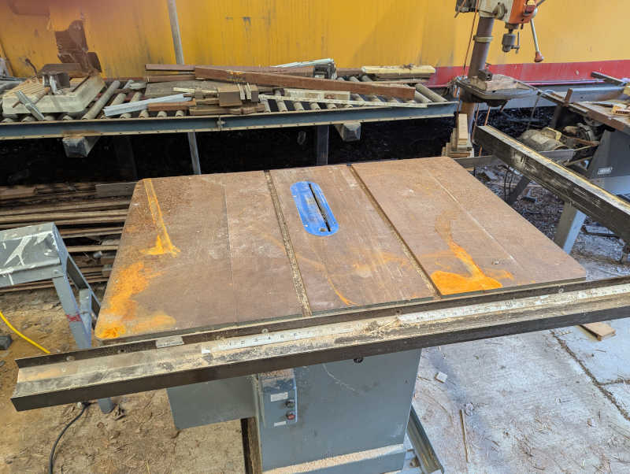
The rust was more advanced than I had thought. It had grown beyond light surface rust to having a pretty hardy black layer. The strip disc was up to the task of removal but it wasn’t as gentle as I hoped it would be. While better than a steel wire brush, it still left swirls of a rotary power tool at work. Nevertheless, the top flat surfaces are now rust-free. The two guide channels and the guide bar itself are still rusty, as the Merryland disc isn’t the right shape to address those items.
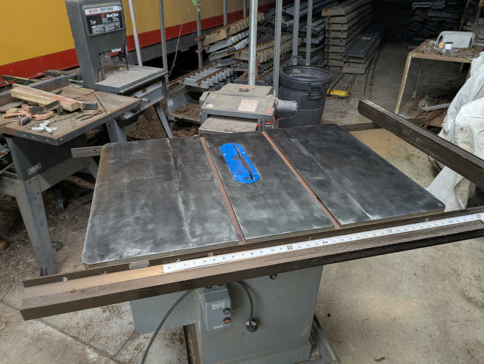
This was a good place to pause, as I’ve maxed out the daily work hours limit. I found a quart of random motor oil in a cabinet. I applied a thin coat to keep rust from immediately returning while I think about what to do next.
Sunday 2026/1/4#
- 1.0 hours total
- 1 facility (34.5 out of 18)
- 0 conductor (16.5 out of 18)
- 0 kitchen (7.75 out of 6)
9:00AM - 10:00AM (1.0 hrs facility)#
No public rides today due to rain, but stopped in to walk around the track in reverse direction from what I’ve been used to so far. Trying to imagine what I would watch for to ensure passenger safety. No leaf blower today, but I did pick up large branches as I went along.
Walking down mountain division eastward from water wheel, my left foot found a sinkhole collapsing to nearly my knee. Thankfully I did not twist my ankle.
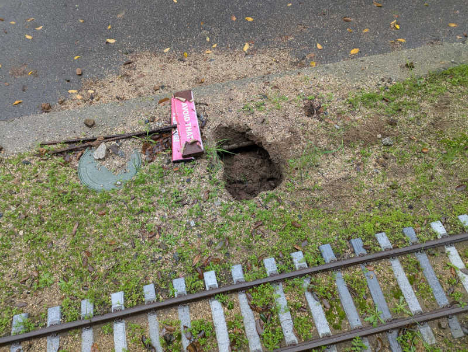
Here’s a picture showing its location relative to train storage barn.
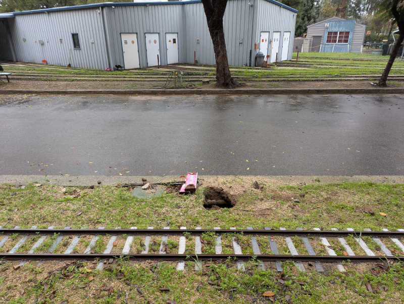
The hole is immediately above a water drain hole. Looks like dirt has been draining out of that hole along with water.
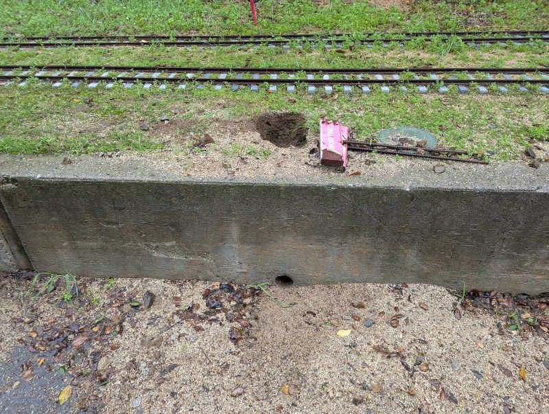
To ensure my good intentions won’t end up being counterproductive I consulted with Nelson via text message. After confirmation I’m good to go, I grabbed a shovel and filled the hole back up with dirt conveniently at hand.
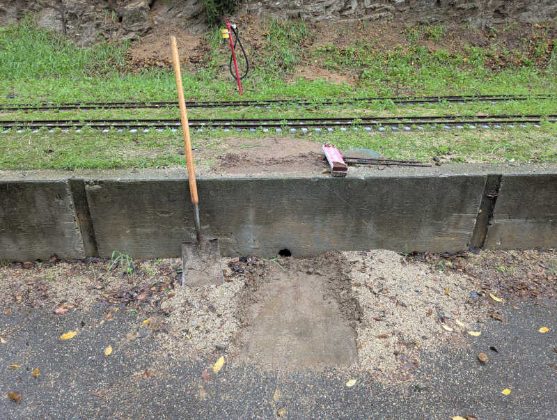
Since it’s raining, things are still muddy. Will need to revisit after it has a chance to dry and settle, but at least now it presents no risk to anyone else’s ankles.